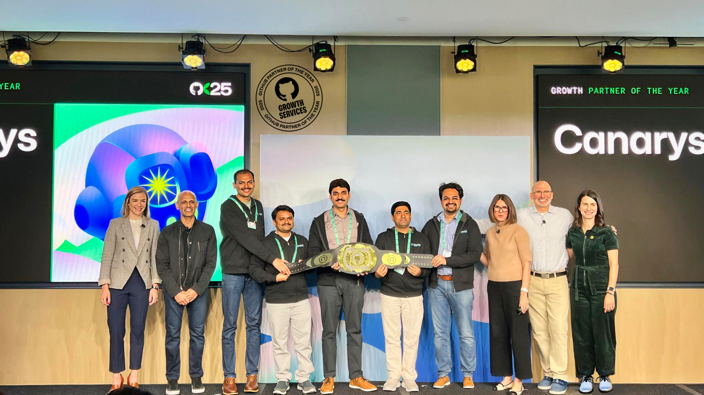
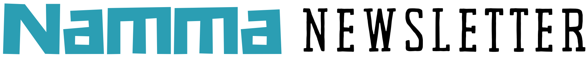

A Year of Global Recognition

Canarys' GitHub Partner of the Year 2025 recognition continued to receive national media attention, highlighting innovation, engineering excellence, and customer success.


Canarys' GitHub Partner of the Year 2025 recognition continued to receive national media attention, highlighting innovation, engineering excellence, and customer success.
Dear Team & Partners,
As we move into this quarter, I want to take a moment to reflect on our collective achievements and the exciting path ahead. Our commitment to engineering excellence and customer-first solutions continues to yield national media recognition and industry milestones.
"Innovation isn't just about adapting to change—it's about setting the standard for what's next."
Canarys Automations Limited has officially been recognized as an Atlassian Gold Solution Partner. This achievement reflects our continued investment in enterprise workflows and software delivery.
Canarys Automations Limited has launched Auryis, an AI-powered compliance platform tailored for the Pharma and Life Sciences sector. Leveraging Large Language Models (LLMs), Auryis streamlines regulatory alignment and automated audit prep.
Our technical leadership was further solidified by being named the Growth Services and Channel Partner of the Year at GitHub Universe, reflecting deep expertise in AI-driven development.
Highlighting exceptional dedication, innovation, and teamwork across our global locations. Professional development remains central to the Canarys culture through continuous learning and mentoring.
Looking back at one of Canarys' most memorable traditions, bringing colleagues together through sports, active competition, and team building[cite: 2].
Gain deep industry insights and strategic perspectives from our recent executive feature interview.
Live demonstration and feature walkthrough of the PAS automation tool[cite: 2].
Company-wide gathering celebrating team achievements and upcoming goals[cite: 2].